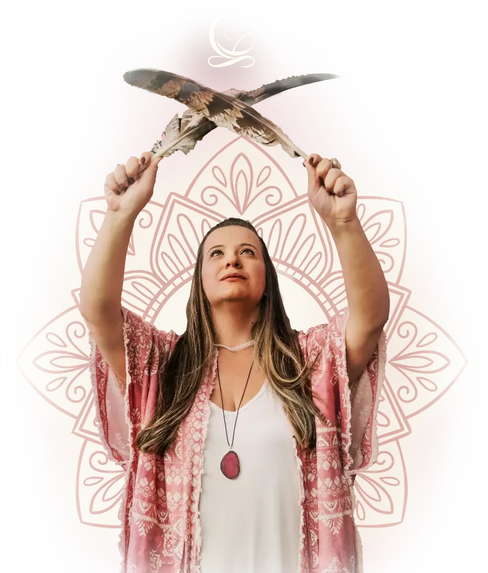

EXCLUSIVO PARA PESSOAS QUE BUSCAM POR UMA EXPERIÊNCIA DE ALTO IMPACTO | Inscrição
Este é o chamado; Uma jornada completa para mulheres que sabem que nasceram para mais: aprofundar a conexão consigo, ativar sua verdadeira potência e guiar outras MULHERES em um movimento de cura, expansão e empoderamento que vai transformar gerações.
